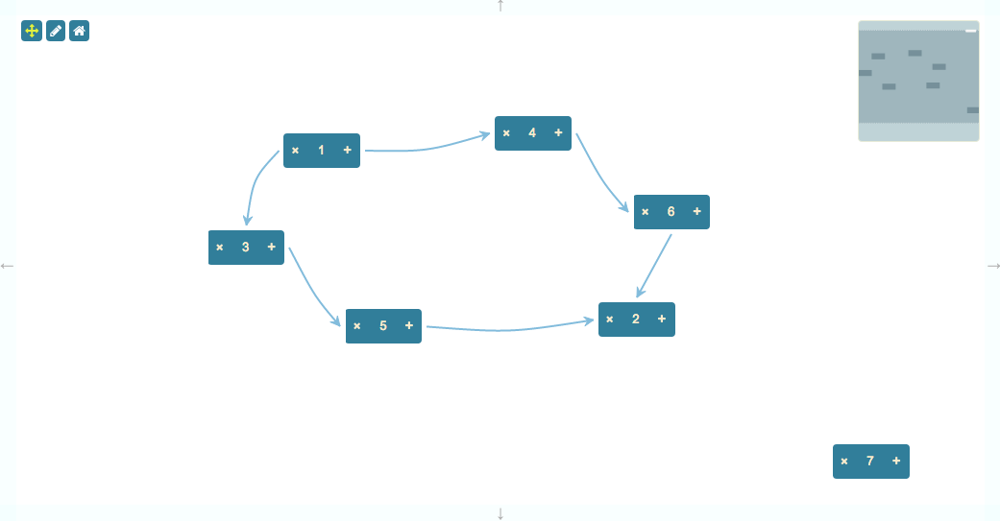
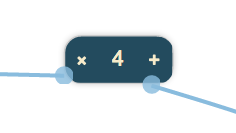

This is an example of how to use the Spring Layout to display a dataset. There are many datasets that can be efficiently represented using this layout.

{
"dependencies": {
"font-awesome": "^4.7.0",
"jsplumbtoolkit": "file:../../jsplumbtoolkit.tgz"
}
}
<link href="//maxcdn.bootstrapcdn.com/bootstrap/3.2.0/css/bootstrap.min.css" rel="stylesheet">
<link href="node_modules/font-awesome/css/font-awesome.min.css" rel="stylesheet">
<link rel="stylesheet" href="node_modules/jsplumbtoolkit/dist/css/jsplumbtoolkit-defaults.css">
<link rel="stylesheet" href="node_modules/jsplumbtoolkit/dist/css/jsplumbtoolkit-demo.css">
<link rel="stylesheet" href="app.css">
Font Awesome, Bootstrap, jsplumbtoolkit-demo.css, and app.css are used for this demo and are not jsPlumb Toolkit requirements. jsplumbtoolkit-defaults.css is recommended for
all apps using the Toolkit, at least when you first start to build your app. This stylesheet contains sane defaults for the various widgets in the Toolkit.
<script src="node_modules/jsplumbtoolkit/dist/js/jsplumbtoolkit.js"></script>
<script src="demo-support.js"></script>
<script src="app.js"></script>
We import jsplumbtoolkit.js from node_modules (it was listed in package.json). demo-support.js is used to generate random data sets for the demo. app.js contains the demo code; it is
discussed on this page.
This demonstration uses a single template to render its nodes:
<script type="jtk" id="tmplNode">
<div style="width:${w}px;height:${h}px;">
<div class="name">
<div class="delete" title="Click to delete">
<i class="fa fa-times"></i>
</div>
<span>${name}</span>
<div class="add" title="Add child node">
<i class="fa fa-plus"></i>
</div>
</div>
</div>
</script>
This is the data used:
var data = {
"nodes": [
{ "id": "window1", "name": "1" },
{ "id": "window2", "name": "2" },
{ "id": "window3", "name": "3" },
{ "id": "window4", "name": "4" },
{ "id": "window5", "name": "5" },
{ "id": "window6", "name": "6" },
{ "id": "window7", "name": "7" }
],
"edges": [
{ "source": "window1", "target": "window3" },
{ "source": "window1", "target": "window4" },
{ "source": "window3", "target": "window5" },
{ "source": "window5", "target": "window2" },
{ "source": "window4", "target": "window6" },
{ "source": "window6", "target": "window2" }
]
};
The data is loaded via this call
toolkit.load({type: "json", data: data})
The load function takes an optional type parameter that indicates the format of the data you are loading. If not supplied - as is the case here - it defaults to "json", which refers to the Toolkit's default Graph JSON syntax.
var view = {
nodes: {
"default": {
template: "tmplNode"
}
},
edges: {
"default": {
paintStyle: { lineWidth: 2, strokeStyle: '#89bcde' },
hoverPaintStyle: { strokeStyle: "orange" },
overlays: [
["Arrow", { fillStyle: "#89bcde", width: 10, length: 10, location:1 } ]
]
}
}
};
This View specifies that the default Node type uses a template with id tmplNode, and that the default Edge
type has a Dynamic Anchor, with an Arrow overlay at location of 1. It also specifies the paintStyle
and hoverPaintStyle as well as the connector for Edges of type "default".
This is the call that sets up the UI:
render({
container: canvasElement,
view:view,
layout: {
type: "Spring",
parameters: {
padding:[ 30, 30 ]
}
},
miniview: {
container: miniviewElement
},
lassoFilter: ".controls, .controls *, .miniview, .miniview *",
dragOptions: {
filter: ".delete *, .add *"
},
events: {
canvasClick: function (e) {
toolkit.clearSelection();
},
modeChanged: function (mode) {
jsPlumb.removeClass(jsPlumb.getSelector("[mode]"), "selected-mode");
jsPlumb.addClass(jsPlumb.getSelector("[mode='" + mode + "']"), "selected-mode");
}
},
jsPlumb: {
Endpoint: ["Dot", { cssClass: "endpointClass", radius: 7, hoverClass: "endpointHoverClass" } ],
EndpointStyle: { fillStyle: '#89bcde' },
EndpointHoverStyle: { fillStyle: "orange" }
}
}
Here's an explanation of what the various parameters mean:
This identifies the element into which you wish the Toolkit to render.
These are the Node, Port and Edge definitions for this renderer.
Parameters for the layout.
{
type:"Spring",
parameters:{
padding:[30,30]
}
}
Here we specify a Spring layout with padding of 30 pixels between nodes in each axis.
{
container:miniviewElement
}
The miniview options provide the element to convert into a miniview. You can also supply an element ID here.
This selector specifies elements on which a mousedown should not cause the selection lasso to begin. In this demonstration we exclude the buttons in the top left and the miniview.
Options for Node drag. Here we supply a filter that tells the Toolkit not to start a drag from the delete or add buttons.
We listen for two events:
canvasClick - a click somewhere on the widget's whitespace. Then we clear the Toolkit's current selection.
modeChanged - Surface's mode has changed (either "select" or "pan"). We update the state of the buttons.
Recall that the Surface widget is backed by an instance of jsPlumb. This parameter sets the Defaults for that object.
Lasso selection is enabled by default on the Surface widget. To activate the lasso, click the pencil icon in the toolbar:

The code that listens to clicks on this icon is as follows:
// pan mode/select mode
jsPlumb.on(".controls", "click", "[mode]", function () {
renderer.setMode(this.getAttribute("mode"));
});
The tap listener extracts the desired mode from the button that was clicked and sets it on the renderer. This causes
a modeChanged event to be fired, which is picked up by the modeChanged event listener in the View.
Note that here we could have used a click listener, but tap works better for mobile devices.
The lasso works in two ways: when you drag from left to right, any node that intersects your lasso will be selected. When you drag from right to left, only nodes that are enclosed by your lasso will be selected.
The Surface widget automatically exits select mode once the user has selected something. In this application we also
listen to clicks on the whitespace in the widget and switch back to pan mode when we detect one. This is the related code,
from the events argument to the render call:
events: {
canvasClick: function (e) {
toolkit.clearSelection();
}
...
clearSelection clears the current selection and switches back to Pan mode.
Each node in this demonstration has two buttons:

Clicking on the + button causes a new node to be added as a child of the current Node. Here's the code that sets up the listener and adds the child. It is important to note the usage of the toolkit.batch function in this example: its purpose is to allow multiple operations to occur on the dataset without any re-rendering taking place. In the case of this demonstration, we add a new Node and then connect it via a new Edge to the Node that was clicked. If we did not batch these operations then the Spring layout would run after the new Node was placed, and the Node's placement would be calculated without the knowledge that it should be connected to some other Node. The Spring layout locks the position of Nodes once they have been calculated in order to reduce the jittery effect you sometimes see with these layouts. On a relayout, every Node is unlocked, but operations such as addNode and addEdge kick off only an incremental layout, not a full relayout.
jsPlumb.on("#canvas", "tap", ".add *", function (e) {
// this helper method can retrieve the associated
// toolkit information from any DOM element.
var info = toolkit.getObjectInfo(this);
toolkit.batch(function () {
// get data for a random node and add the node to the toolkit
var newNode = toolkit.addNode(jsPlumbToolkitDemoSupport.randomNode());
// and add an edge for it from the current node.
toolkit.addEdge({source: info.obj, target: newNode});
});
});
jsPlumb.on("#canvas", "tap", ".delete *", function (e) {
var info = toolkit.getObjectInfo(this);
toolkit.removeNode(info.obj);
});
Once again we see tap used rather than click; this works better on mobile devices.